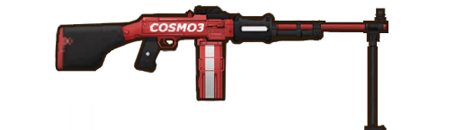

Related pages :
[Main page]
[Enemy Units]
Stalker Machine Gunner
Basic Info
Among the gangs lurking in Unity City and the Landing Grounds, the most mysterious are a group of armed men known as the "Stalkers." Well-equipped, highly skilled, and elusive, they are considered ruthless and unscrupulous even by the scavengers. When Marianne began her efforts to revitalize the United Territory, these men suddenly came into the sights of the Guard Bureau.
Weapons
RPD Light Machine Gun

Behavioral Tendencies
Important firepower points on the battlefield, using light machine guns with strong suppressive effects for continuous attacks, usually stationed in fortifications, not good at mobile warfare